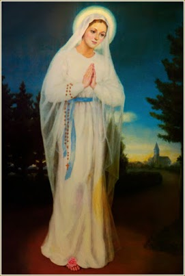
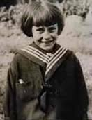
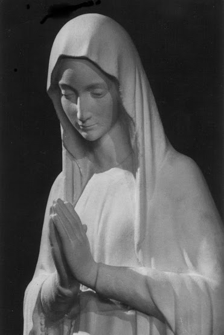
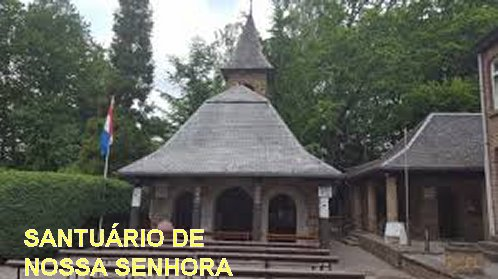
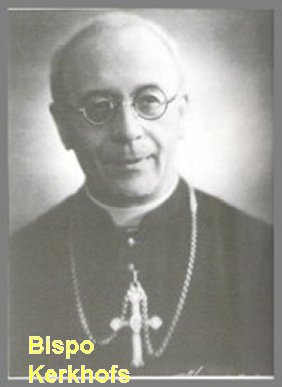

“MÃE DE DEUS E NOSSA MÃE”

QUARTA APARIÇÃO DE NOSSA SENHORA
Sexta-feira, dia 20 de Janeiro, dia seguinte as aquelas preciosas revelações da MÃE SANTÍSSIMA. Todavia, Mariette não estava muito bem de saúde, embora a temperatura estivesse agradável, porque não estava frio e nem ameaçava nevar naquela noite. Às 19 horas como habitualmente acontecia, ela começou a rezar o Terço no jardim, e depois de alguns instantes, cheia de alegria, na pureza dos seus 12 anos de idade quase completos, gritou: “Lá está ELA!” (acima dos pinheirais). Desde a Aparição do dia anterior, as noticias correram ligeiras e algumas pessoas do lugarejo e residentes nas proximidades, já se encontravam no jardim da casa de Mariette, ou permaneciam na estrada perto dos pinheirais aguardando alguma novidade. Em seguida Mariette perguntou: “Bonita SENHORA, quais são os SEUS desejos?” NOSSA SENHORA respondeu: “EU gostaria que uma pequena Capela fosse construída aqui”. (Próximo a estrada onde corria aquela nascente de água). Depois, a VIRGEM MARIA estendeu os braços na horizontal e com a mão direita fez o sinal da Cruz, abençoando Mariette, pela tarefa de divulgar o desejo DELA. Devido ao mal estar que estava sentindo e ao frio que fazia, a Menina perdeu a consciência e desmaiou. Seu pai e um vizinho carregaram Mariette para dentro de casa, onde rapidamente ela se recuperou e dormiu em paz.
QUINTA APARIÇÃO DE NOSSA SENHORA
Desde o dia 21 de Janeiro ao dia
11 de Fevereiro, Mariette rezou o Terço no jardim todas as noites, apesar do
frio e acompanhada por diversas pessoas que acreditavam nas Aparições e queriam
estar presente, mas, NOSSA SENHORA interrompeu a sequência de visitas e não

Sábado dia 11 de Fevereiro, Mariette estava na estrada rezando em companhia de algumas pessoas, quando no final do segundo Terço do Rosário, as pessoas presentes viram ela se levantar e ir se ajoelhar num lugar que lhe era familiar, perto do córrego. Ela mergulhou a mão na água e fez o sinal da Cruz. NOSSA SENHORA apareceu e disse: “EU vim para aliviar os sofrimentos. Breve vou vê-la novamente”. Em seguida ELA desapareceu. Mariette cheia de dúvidas correu para casa e chorou, porque não entendeu as palavras de NOSSA SENHORA, imaginou que ELA estava se referindo a ela, quando disse: “aliviar os sofrimentos”. Evidentemente NOSSA SENHORA estava se referindo aos terríveis sofrimentos do povo.
SEXTA APARIÇÃO DE NOSSA SENHORA
Era quarta-feira dia 15 de Fevereiro de 1933. A SANTÍSSIMA VIRGEM MARIA apareceu sempre do mesmo modo, em cima de uma pequena nuvem cinza, e encima dos SEUS pés, uma pequena flor vermelha. Sua presença deixou Mariette tão feliz, que logo disse a MÃE DE DEUS: “O Capelão da Igreja (Padre Jamin) me instruiu a LHE pedir um sinal”. MARIA percebendo que o Padre duvidava respondeu:“Tenha Fé em MIM, EU acredito em você”. E MARIA confiou um segredo a Mariette (a menina ficou meio assustada e até chorou). E depois NOSSA SENHORA disse: “Orai muito a DEUS”. E assim, depois desse acontecimento, o Capelão teve que acreditar. Da mesma forma que algumas pessoas mais idosas que desconfiavam, mesmo com suas dúvidas, tiveram que acreditar nas Aparições da VIRGEM MARIA em Banneux.
SÉTIMA APARIÇÃO – FÉ EM PRIMEIRO LUGAR
Na segunda-feira dia 20 de
Fevereiro, estava muito frio. Mesmo assim, NOSSA SENHORA apareceu no final do
Terceiro Terço do Rosário. ELA levou Mariette para o pequeno riacho ao lado da
estrada e sorrindo, lhe disse:
“MEU AMADO FILHO reza muito”. Depois muito
séria falou: “Adeus”.
E conduzida pela pequena nuvem cinza logo desapareceu.
A vidente Mariette, ainda permaneceu rezando na companhia das pessoas que ali se
encontravam. 
OITAVA APARIÇÃO – ÚLTIMA VISITA DE NOSSA SENHORA
Era quinta-feira, dia 2 de Março, ou seja, dez dias depois da Sétima Aparição, e Mariette viu a SANTÍSSIMA VIRGEM MARIA pela última vez em Banneux. Naquele dia, as chuvas torrenciais tinham caído desde as três horas da tarde. Mariette saiu de casa às 19 horas e foi para aquele mesmo local na estrada, ao lado da nascente de água. Lá permaneceu em companhia das pessoas que lá se encontravam, e começaram as orações do Rosário. Logo em seguida, a chuva parou de uma vez. Isto representava a presença de NOSSA SENHORA entre eles. Mariette ficou em silêncio, e obedecendo a ordem da VIRGEM, estendeu os braços, depois se levantou, deu um passo e ajoelhou. Rezou algumas orações, foi até a nascente de água, molhou a mão direita e fez o sinal da Cruz, e foi para a sua casa, sem comentar nada com as pessoas presentes. Depois de muitas lágrimas em casa, ela transmitiu a mensagem que a VIRGEM MARIA lhe confiou: “EU SOU a MÃE DO SALVADOR, a MÃE DE DEUS. Orem muito”. Antes de deixá-la a SANTÍSSIMA VIRGEM MARIA colocou as MÃOS no ombro dela e disse: “Adeus”.
A MENSAGEM DIVINA
NOSSA SENHORA deixou claro o objetivo DIVINO ao solicitar de Mariette a construção de uma "pequena Capela", porque ELA sabia que na vida tudo começa pequeno e modesto, que vai ampliando de acordo com a necessidade ou com o crescimento natural da frequência. Importante é existir a Capela, que guardará diariamente a presença de JESUS SACRAMENTADO, REDENTOR da humanidade de todas as gerações, para inspirar e proteger aqueles que viessem visitá-lo e suplicar o tão querido e precioso carinho do DIVINO E SAGRADO CORAÇÃO.

Outro aspecto importante que chama atenção durante as Aparições da MÃE DE DEUS em BANNEUX, foram às conversões do coração que se concretizaram. Por exemplo, os pais de Mariette embora cristãos e católicos, estavam totalmente descrentes e afastados das práticas religiosas, não tinham tempo para DEUS. Com o acontecimento dos fatos, eles não só voltaram a acreditar como quiseram e participaram dos “encontros com a MÃE SANTÍSSIMA” para rezar, e suplicar a eterna bondade e a infinita misericórdia do DEUS que nos inventou.
Nestas Aparições, NOSSA SENHORA em poucas palavras, evidenciou essa realidade, e objetivando marcar a presença DIVINA entre nós, deixou uma nascente de água para salvar e curar os doentes de todas as naturezas e de todas as nações, sendo um poderoso lenitivo para as almas que acreditam e possuem fé sincera no amor e no poder de “DEUS”. Assim, o gesto confiante do cristão de beber e mergulhar as mãos na água da nascente traduzem um forte indicativo, que revela a sua confiança e abertura do seu espírito, para acolher as graças da “VIRGEM MÃE” e do “SENHOR DEUS DA VIDA”.
INVESTIGAÇÃO OFICIAL DAS APARIÇÕES
O processo de reconhecimento das Aparições pela Igreja ocorreu em várias etapas.
Quando as primeiras Aparições foram
anunciadas, o Bispo Louis-Joseph Kerkhofs ficou inicialmente cético e até hostil.
Mas logo depois dos dois primeiros dias, 
Sua confiança pessoal na “SANTÍSSIMA VIRGEM MARIA” também o convidou a considerar com cautela os fatos que Mariette havia testemunhado, por ser uma criança com 12 anos de idade ainda não completos. Assim, mantendo grande discrição, assumiu sua responsabilidade episcopal em relação ao povo de DEUS que lhe fora confiado e que, no respeito à disciplina da Igreja, preocupou-se com o bem espiritual dos fiéis.
Agindo desse modo, estabeleceu uma primeira comissão de inquérito e, assim, se envolvendo num longo e minucioso procedimento. Não se tratava apenas de autorizar o culto público à “VIRGEM DOS POBRES”, mas de reconhecer a veracidade dos eventos ocorridos em Banneux, de 15 de Janeiro a 2 de Março de 1933. Monsenhor Kerkhofs cuidou do rigor teológico e da clareza histórica dos próprios fatos. Setenta e três testemunhas foram ouvidas pela primeira comissão Diocesana, e entre elas se encontravam muitos especialistas (médicos, historiadores, teólogos e canonistas), que deram suas opiniões a respeito das Aparições. E primordialmente com muita sabedoria e sensatez, Monsenhor conseguiu superar as suas próprias hesitações e também, superar as poucas objeções, apenas graças ao exame crítico de todos os testemunhos feitos pelo Padre Jesuíta René Rutten, um admirável especialista que fez um digno e respeitoso trabalho, analisando criteriosamente as dúvidas surgidas, com um cuidado perfeccional de um verdadeiro Bolandista.
Foi assim que o senhor Bispo se pronunciou em 1942, sobre o culto e os fatos de Banneux. A declaração das cartas episcopais foi confirmada e até reforçadas pela carta episcopal de 22 de agosto de 1949. Como Pastor da Igreja de DEUS que vive em Liège, na Bélgica, Monsenhor Kerkhofs deu aos fiéis a garantia da pureza evangélica da mensagem e da realidade dos fatos. A justiça da jovem testemunha, da sua humilde disponibilidade e seu desinteresse permitiu esse julgamento claro e autoritário: a “SANTÍSSIMA VIRGEM MARIA” veio visitar essa criança nas profundezas do inverno de 1933 e nos dirigiu as palavras que Mariette Beco nos transmitiu com clareza e objetividade.